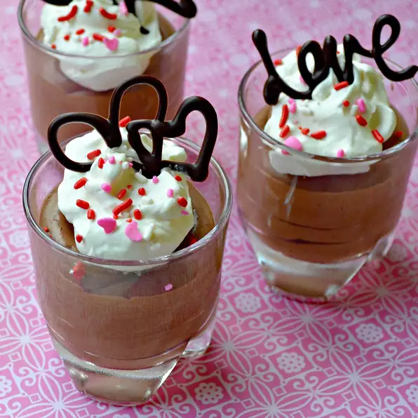

Chef John's Dark Chocolate Mousse

This recipe will take you about 4 hrs and 25 mins but believe me,
it is worth it. The standart recipe will give you about 4 servings.
Ingredients
- 3 1/2 ounces dark chocolate, chopped
- 1 tablespoon butter
- 2 tablespoons water
- 1/8 teaspoon grounded dried chipotle pepper
- 1 tiny pinch salt
- 2 large egg yolks
- 2 tablespoons water
- 1 tablespoon white sugar
- 1/2 cup heavy whipping cream, chilled
- 1 tablespoon heavy whipping cream, chilled
Directions
- Bring a saucepan of water to simmer on low heat. Place chocolate, butter, 2 tablespoons
of water, grounded chipotle pepper and salt in a heatproof bowl;
set bowl over the simmering water. When the butter melts, whisk the chocolate
mixture gently until smooth and shiny. Set aside to cool for a few minutes.
- Whisk egg yolks, 2 tablespoons of water and sugar in another heatproof bowl
over the same pan of simmering water until egg yolk mixture is foamy
and hot to the touch, about 3 minutes. Pour hot egg mixture into warm
chocolate mixture, whisk until smooth, and set over a bowl of ice to chill.
Whisk constantly until mixture has cooled to room temperature or slightly cooler.
- Pour 1/2 cup and 1 tablespoon cold cream into a chilled metal bowl, whisk until
cream holds soft peaks. Place about half the whipped cream into the cooled
chocolate mixture; gently fold the cream into the chocolate. Repeath with remaining
half of whipped cream, folding gently until nearly all the streaks have dissapeared.
Divide mousse into 4 6-ounce ramekins.
- Cover each ramekin with plastic wrap and refrigerate at least 4 hours
(up to overnight) before serving.